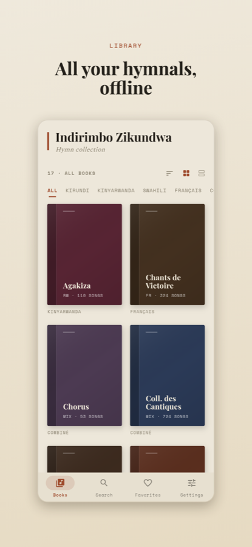
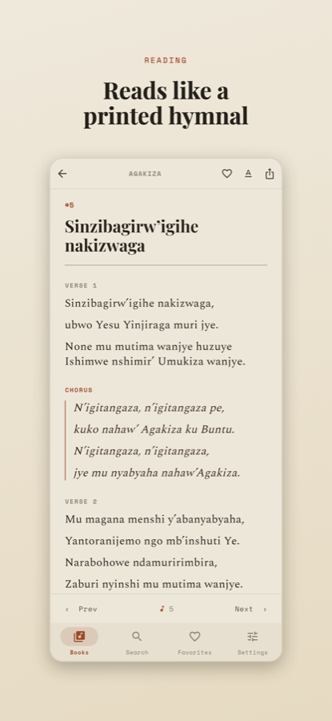
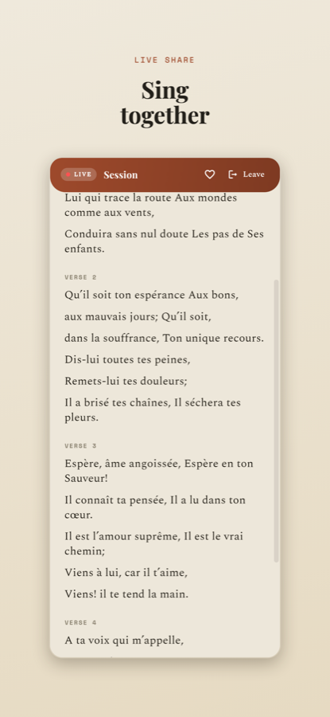
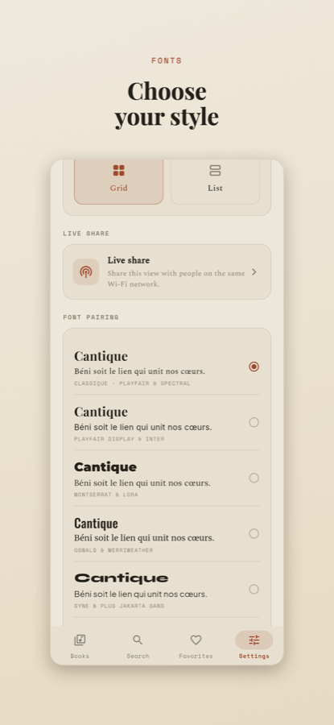
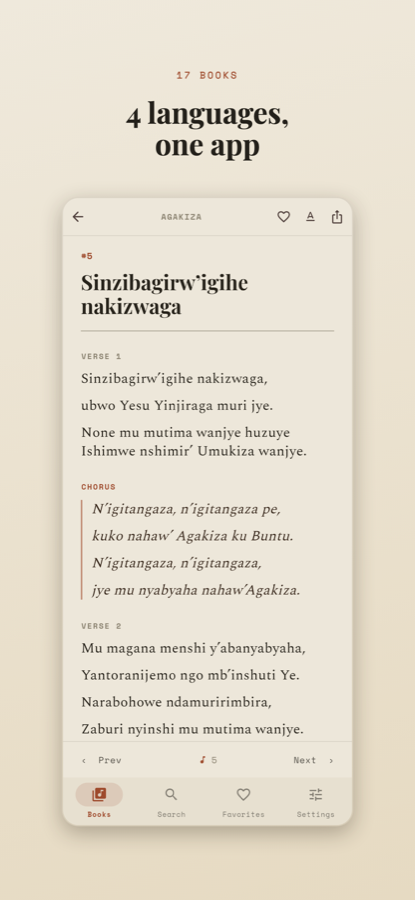

📡
Completely offline
The whole corpus is bundled inside the app as a local asset. Open it on a plane, in a village, or with airplane mode on — every song is there, instantly, with no network needed.
Indirimbo Zikundwa bundles 5,495 Christian hymns from 17 public-domain collections in Kirundi, Kinyarwanda, Swahili and French — readable anywhere, with no account and no internet connection.

Why you'll love it
Built for the choir loft, the bus, the bush — anywhere the songs are needed and the signal isn't.
The whole corpus is bundled inside the app as a local asset. Open it on a plane, in a village, or with airplane mode on — every song is there, instantly, with no network needed.
Search by number, title, lyrics or artist — across all 17 books or within one. Collections that credit performers also offer an artist filter to show just one singer's songs.
Verses and refrains break into proper hymn lines at the punctuation, so songs read like a real printed book — warm parchment, a high-contrast serif title, and a calm reading serif.
One device hosts and everyone on the same Wi-Fi mirrors the song and scroll position live — SharePlay-style. Idle phones nearby get a one-tap "join" banner. Scales to a full room.
Nine selectable font pairings with live preview, three reading themes (Light · Sepia · Dark), adjustable size and line spacing, plus pinch-to-zoom and an optional keep-screen-on.
Kirundi, Kinyarwanda, Swahili and Français — filter the library by language, group and sort it your way, and switch the whole interface between Français and English.
The reader
Titles are normalised from shouting ALL-CAPS to gentle sentence case; divine names stay capitalised. Verses and choruses are clearly labelled and laid out line-by-line, the way a hymnal prints them — so your eye never loses its place mid-verse.
Double-tap for distraction-free fullscreen, pinch to zoom the text, and keep the screen awake while you sing. Favourite the songs you return to, and flip between A/B variants when a hymn has two versions.

Live share
No more "what number are we on?" One phone leads; every device on the same Wi-Fi follows the song and the scroll in real time. Followers can still scroll ahead on their own, like a song, and rejoin the leader with a tap.
Idle phones on the network see an automatic "session nearby — Join" banner, so newcomers are in within seconds. It scales comfortably to large gatherings on a real Wi-Fi router, and web devices can join from a link.

The corpus
Classic public-domain hymnals across four languages — each with its own deep book-spine colour on the shelf.
The songs come from various public-domain hymnals. Indirimbo Zikundwa is an independent reader connected to the missionnaire.net ministry — where you'll also find sermons, audio music and more resources.
Calm by design
Every song is bundled locally. The app makes no network calls to read, search or share within the room.
No sign-up, no analytics, no profile. Your favourites and settings stay on your device.
The full Flutter source is on GitHub — read exactly how the dataset and sharing work.
Free to use, on Android, iOS and the web. Built to serve, not to monetise.
Free · Android, iOS & the web · 5,495 hymns bundled offline
Release builds are published on
GitHub Releases.
The buttons above automatically point to the latest .apk, iOS
and web builds as soon as they're uploaded — until then they link to the
releases page.
A closer look


Yes. All 5,495 songs are bundled inside the app as a local asset, so reading and searching never touch the network. Only the optional "sing together" feature uses your local Wi-Fi — and even that stays on your own network.
Hymns in Kirundi, Kinyarwanda, Swahili and Français, plus combined collections. The interface itself can be switched between Français and English.
From various public-domain hymnals — Umuco, Ikirundi, Agakiza, Tenzi za Rohoni, Les Ailes de la Foi, Chants de Victoire and more. The app is an independent reader connected to the missionnaire.net ministry.
One device hosts a session; others on the same Wi-Fi mirror the song and scroll position live, and can like songs or scroll ahead on their own. Nearby idle phones get an automatic one-tap join banner. It scales to large rooms on a real router.
No. There's no sign-up, no tracking and no analytics. Your favourites and settings live only on your device.
Builds are published on GitHub Releases. The download buttons above auto-link to the latest Android, iOS and web builds as soon as they're available.